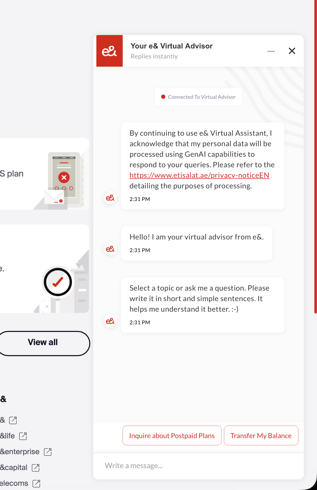

As AI Product Owner, I built and scaled AI chatbots across multiple e& platforms (e& UAE, Smiles, e& Money) from zero to 500K+ monthly interactions across web, mobile, WhatsApp, and IVR — achieving 90%+ resolution accuracy and transforming how millions of customers get support.

e& UAE serves millions of telecom customers, and operates multiple consumer platforms — the core e& UAE telecom app, Smiles (loyalty and lifestyle), e& Money (fintech), and more. Customer care across these platforms was heavily dependent on human agents, leading to long wait times, high operational costs, and inconsistent service quality.
The challenge was building a unified AI chatbot capability that could be deployed across all these platforms — each with different user bases, use cases, and integration requirements — while maintaining consistent quality and scaling to handle hundreds of thousands of monthly interactions.
I served as AI Product Owner, responsible for:
Analyzed customer care data to identify the highest-volume, most repetitive inquiries — billing questions, plan changes, service activation, and troubleshooting. These categories represented the majority of call center volume and were ideal candidates for AI automation.
Presented the business case to shareholders, demonstrating projected cost savings, improved CSAT, and scalability. Secured buy-in and budget for a phased rollout.
Defined the conversational AI architecture integrating NLP/NLU engines with e&'s existing CRM and billing systems. Designed conversation flows that felt natural while handling complex telecom-specific queries. Key decisions included:
Worked in dual-track Agile — discovery and delivery running in parallel. Each sprint delivered measurable improvements in intent recognition, resolution accuracy, and conversation completion rates. Prioritized features based on customer impact and feasibility.
After proving the model on web chat, expanded to WhatsApp (the dominant messaging platform in the UAE) and IVR. Each channel required adapting the conversational experience — WhatsApp needed concise, mobile-friendly responses while IVR required voice-optimized dialogue trees.
Implemented continuous monitoring and optimization loops. Tracked resolution accuracy, CSAT, escalation rates, and average handling time. Applied ISO/IEC 42001 governance to ensure ethical AI practices — bias detection, transparency in automated decisions, and data privacy compliance.